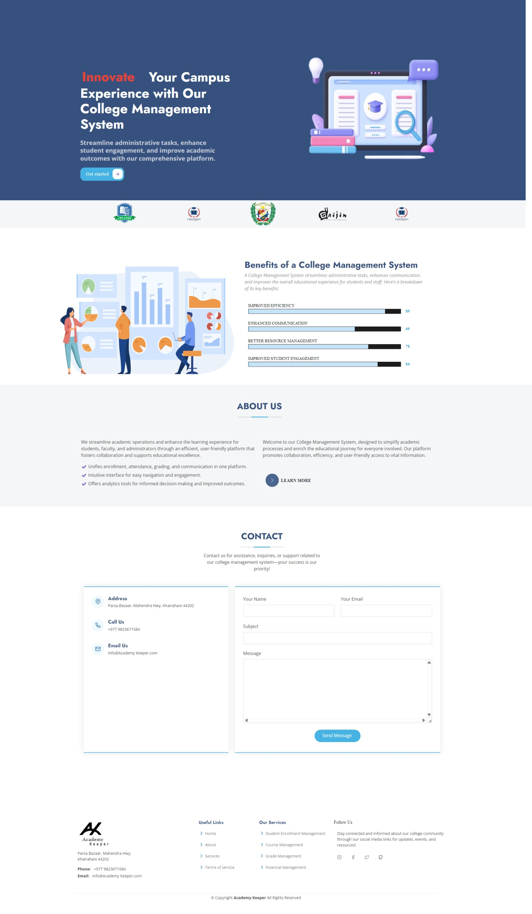
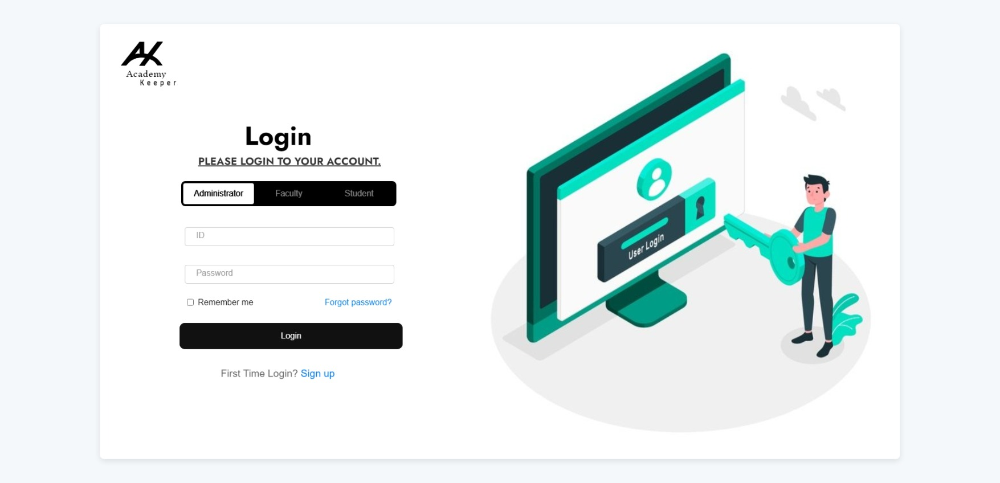
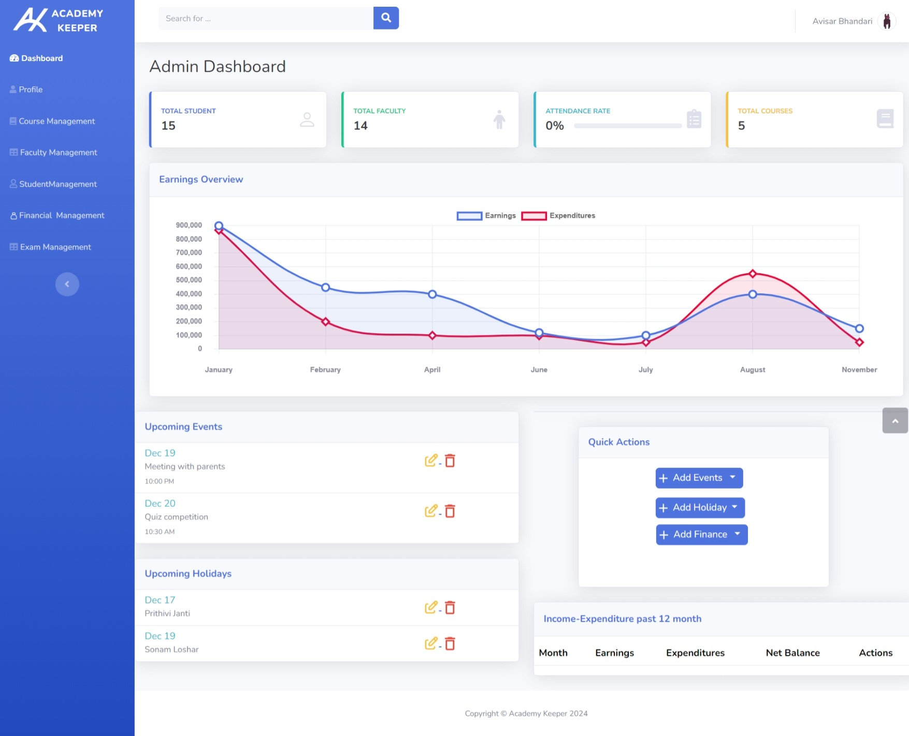
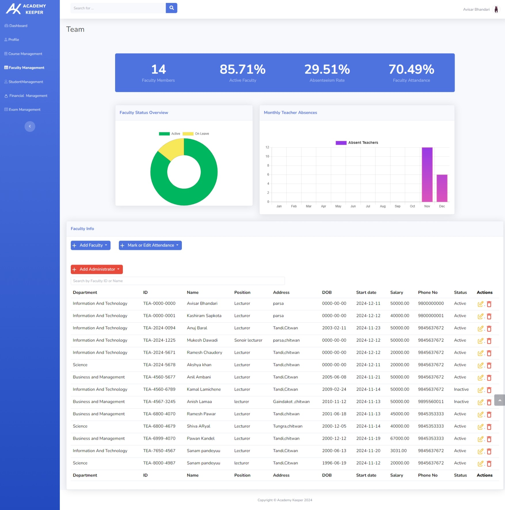

A role-based college management system that centralizes day-to-day academic operations enrollment, attendance, finance, and exams into one platform with dedicated portals for administrators, faculty, and students.




A public landing page introduces the platform to prospective students, then a unified login screen routes each user into one of three portals based on role. From there, the system covers the full academic workflow: enrollment, attendance, course assignment, exam scheduling and results, and institutional finance each scoped to what that role should actually see and edit.
A classic server-rendered PHP application: index.php is
the public entry point, front/ holds login and sign-up
pages, and Dashboard/ splits into admin/,
faculty/ and student/ subfolders — one set
of views and logic per role. Styling lives in
css/ (Bootstrap 5 plus custom styles), interactivity in
js/ via jQuery and AJAX, and a MySQL database backs
everything from user accounts to attendance records.
The core design problem was the same one as a permissions system in any real institution: one shared dataset (students, courses, attendance, finance), three very different views into it, and no role able to see or touch more than it should — enforced at both the routing and query level rather than just hidden in the UI.